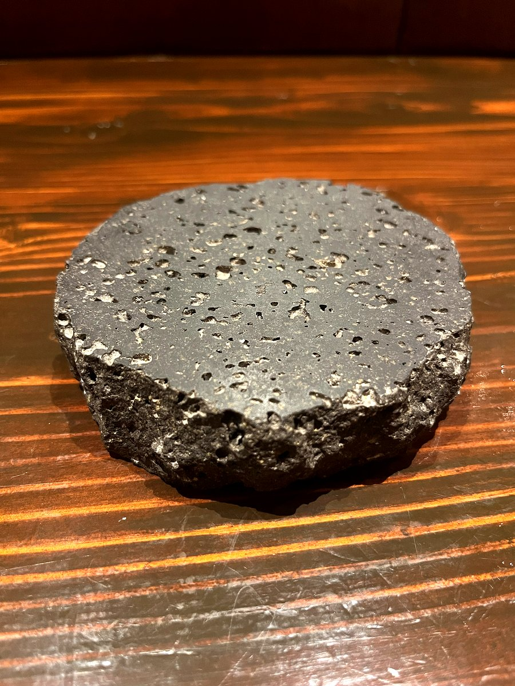

The Ancient Art of Cooking Over Volcanic Rock
Long before gas burners and electric grills became kitchen staples, humans discovered something remarkable: volcanic stone, heated to the right temperature, could cook food with an almost magical quality. This technique, known as lava stone grilling, has roots stretching back thousands of years across volcanic regions from the Mediterranean to Southeast Asia and, of course, Japan.
In Japanese cuisine, the use of natural stone for cooking has a subtle but important history. Volcanic regions like Kyushu and parts of the Kanto area have long traditions of stone-grilled dishes. Today, a handful of yakitori specialists have adopted lava stone grilling as their method of choice, prizing it for the distinctive texture and flavor it brings to each skewer.

How Lava Stone Grilling Works
At its core, lava stone grilling is deceptively simple. Porous volcanic rocks, typically basalt or similar ignite-formed minerals, are heated until they radiate intense, steady heat. The food is then cooked above or directly on these superheated stones. But the simplicity of the setup belies the complexity of the science at work.
Far-Infrared Heat
The key advantage of lava stone lies in its emission of far-infrared radiation. Unlike the direct flame of a gas burner, which heats primarily through convection (hot air), far-infrared rays penetrate the surface of the meat and warm it from within. The result is chicken that is evenly cooked all the way through, with a beautifully seared exterior and a juicy, tender interior. Think of it as the difference between standing next to a campfire and sitting in warm sunlight: both are warm, but the quality of the heat feels fundamentally different.
Mineral Content and Moisture Control
Volcanic rock is rich in minerals including iron, magnesium, and calcium. When heated, these minerals contribute subtle catalytic effects that can influence the browning and caramelization of the meat's surface. Additionally, the porous structure of lava stone absorbs dripping fats and juices, which then vaporize and rise back toward the food as flavorful steam. This self-basting effect keeps each skewer moist while adding a delicate smokiness that is impossible to replicate with other heat sources.
Even Heat Distribution
One of the biggest challenges in grilling yakitori is maintaining consistent temperature across the entire cooking surface. Charcoal can develop hot spots and cool zones, requiring constant adjustment of skewers. Lava stone, by contrast, distributes heat remarkably evenly thanks to its dense mineral composition. Once the stones reach temperature, they hold it steadily for extended periods, giving the cook precise control over doneness.
Lava Stone vs. Charcoal: An Honest Comparison
Charcoal grilling, particularly with high-quality binchotan (Japanese white charcoal), is the most celebrated yakitori cooking method, and for good reason. Binchotan burns clean and hot, producing a distinctive smoky aroma that many consider essential to authentic yakitori.
Lava stone grilling offers a different set of advantages. While it produces less of the bold smokiness associated with binchotan, it compensates with superior moisture retention and more forgiving temperature control. For cuts like momo (thigh) and tsukune (meatball), where juiciness is paramount, lava stone often produces a noticeably more succulent result.
The best cooking method is ultimately the one in the hands of a skilled cook. Both charcoal and lava stone are tools; mastery comes from understanding how heat interacts with each cut of meat.
Here is a practical comparison:
- Heat consistency: Lava stone provides steadier, more uniform heat. Charcoal requires more active management.
- Smoke flavor: Charcoal (especially binchotan) delivers stronger smoky notes. Lava stone offers a gentler, mineral-tinged smokiness.
- Moisture retention: Lava stone excels here due to its self-basting vaporization effect.
- Temperature control: Lava stone is more forgiving for beginners. Charcoal rewards experienced grillers.
- Clean-up: Lava stone produces no ash and is easier to maintain over time.
A Brief History of Volcanic Stone Cooking
Archaeological evidence suggests that humans have used heated stones for cooking for at least 30,000 years. In Polynesia, the earth oven (umu or hangi) relies on volcanic rocks to create an underground oven. In Central America, the comal, a flat cooking surface, was historically made from volcanic stone. Indigenous peoples of Iceland used geothermally heated lava rocks to cook fish and bread.
In Japan, the connection between volcanism and cuisine runs deep. The country sits on the Pacific Ring of Fire, with over 100 active volcanoes providing an abundance of volcanic material. Stone-grilled wagyu (ishiyaki) is a familiar sight in many ryokan (traditional inns), where thin slices of beef are seared tableside on heated river stones or lava plates.
The application of lava stone specifically to yakitori is a more modern innovation. As yakitori culture expanded beyond Tokyo's post-war street stalls and into dedicated restaurants across Japan, adventurous chefs in cities like Osaka began experimenting with alternative heat sources. The Tenjinbashi (天神橋) area, with its dense cluster of small eateries, became one such proving ground for new approaches to traditional grilling.
Why Lava Stone Makes Yakitori Taste Better
If you have eaten yakitori grilled over lava stone and compared it to other methods, you may have noticed several differences:
- Juicier meat: The far-infrared heat cooks the inside before the outside dries out, locking in natural juices.
- Crispier skin: The intense, even radiant heat creates a thin, crackly char on skin-on cuts like kawa (chicken skin) and negima (chicken and leek).
- Cleaner flavor: Without combustion byproducts from burning charcoal, the pure taste of the chicken and its seasoning come through more clearly.
- Consistent quality: Every skewer from the first to the last receives the same steady heat, eliminating the inconsistency that can plague the tail end of a charcoal session.
For diners visiting the Minamimorimachi (南森町) area in Osaka, trying lava stone-grilled yakitori offers a chance to taste a familiar dish from an entirely new angle. At Danke (だんけ), a small 8-seat counter izakaya near Tenjinbashi, the chef uses lava stone grilling to draw out the best in each cut, from classic momo and negima to more adventurous offal selections.
Practical Tips for Tasting the Difference
If you want to appreciate lava stone grilling on your next visit to an Osaka yakitori spot, keep these tips in mind:
- Start with simple cuts. Order momo (thigh) or sasami (breast tenderloin) first. These let you taste the pure effect of the grilling method without strong marinades masking the difference.
- Try salt before sauce. Shio (salt) seasoning allows you to taste the meat and the influence of the cooking method most clearly.
- Pay attention to texture. Notice whether the exterior has a clean sear without charring, and whether the inside remains uniformly juicy.
- Ask the chef. At a counter-style izakaya, you are sitting right in front of the grill. Most chefs welcome questions about their technique and are happy to explain their approach.
Lava stone grilling may not carry the romantic mystique of binchotan charcoal, but for those who value juiciness, consistency, and a clean expression of ingredient quality, it represents a compelling alternative. Whether you are a yakitori veteran or trying Japanese grilled chicken for the first time, understanding the method behind the cooking deepens the enjoyment of every bite.
在火山岩上烹饪的古老艺术
早在燃气灶和电烤炉成为厨房必备品之前，人类就发现了一个了不起的现象：火山石加热到合适的温度后，能以一种近乎神奇的方式烹饪食物。这种被称为熔岩石烧烤的技术，其历史可追溯数千年，遍布地中海、东南亚，当然还有日本等火山地区。
在日本料理中，使用天然石材烹饪有着微妙但重要的历史。九州和关东部分地区等火山地带长期以来都有石烤料理的传统。如今，一些专注于烤鸡串的专门店选择了熔岩石烧烤作为首选方法，看重它为每串烤鸡串带来的独特口感和风味。
熔岩石烧烤的工作原理
从本质上讲，熔岩石烧烤看似简单。多孔的火山岩，通常是玄武岩或类似的火成矿物，被加热到能辐射强烈而稳定热量的程度。然后在这些超高温石头上方或直接在其上烹饪食物。但简单的设置背后隐藏着复杂的科学原理。
远红外线热能
熔岩石的关键优势在于其发射的远红外线辐射。与主要通过对流（热空气）加热的燃气灶直火不同，远红外线能穿透肉的表面，从内部加热。这样烤出的鸡肉内外均匀熟透，外表焦香漂亮，内里多汁嫩滑。就好比站在篝火旁和坐在温暖的阳光下的区别：两者都暖和，但热量的质感截然不同。
矿物质含量与水分控制
火山岩富含铁、镁、钙等矿物质。加热后，这些矿物质产生微妙的催化效应，影响肉表面的褐变和焦糖化反应。此外，熔岩石的多孔结构会吸收滴落的油脂和肉汁，然后蒸发并以风味蒸汽的形式上升回到食物上。这种自动浇汁效果让每串烤肉保持湿润，同时增添一种其他热源无法复制的细腻烟熏味。
均匀的热量分布
烤鸡串最大的挑战之一是在整个烹饪表面保持一致的温度。木炭可能会出现热点和冷区，需要不断调整烤串的位置。相比之下，熔岩石凭借其致密的矿物组成，热量分布非常均匀。一旦石头达到温度，就能长时间稳定保持，让厨师对熟度有精确的控制。
熔岩石 vs. 木炭：诚实的比较
木炭烧烤，尤其是使用高品质备长炭（日本白炭），是最受推崇的烤鸡串烹饪方法，这是有充分理由的。备长炭燃烧干净且温度高，产生一种许多人认为是正宗烤鸡串必不可少的独特烟熏香气。
熔岩石烧烤提供了不同的优势。虽然它产生的浓烟味不如备长炭那么强烈，但它以卓越的水分保持能力和更宽容的温度控制来弥补。对于鸡腿肉（もも）和鸡肉丸（つくね）等注重多汁口感的部位，熔岩石通常能产生明显更加柔嫩多汁的效果。
最好的烹饪方法最终取决于厨师的技艺。木炭和熔岩石都是工具；精通来自于理解热量如何与每种肉类部位相互作用。
以下是一个实际比较：
- 热量一致性：熔岩石提供更稳定、更均匀的热量。木炭需要更积极的管理。
- 烟熏风味：木炭（尤其是备长炭）带来更强烈的烟熏味。熔岩石提供更柔和的、带矿物质气息的烟熏味。
- 水分保持：熔岩石在这方面表现出色，这得益于其自动浇汁的蒸发效果。
- 温度控制：熔岩石对初学者更友好。木炭则更考验经验丰富的烤师。
- 清洁：熔岩石不产生灰烬，长期维护更容易。
火山石烹饪简史
考古证据表明，人类使用加热石头烹饪至少已有3万年历史。在波利尼西亚，土炉（umu或hangi）依靠火山岩在地下创造烤炉。在中美洲，用于烹饪的平板comal历史上由火山石制成。冰岛原住民使用地热加热的熔岩石来烹饪鱼类和面包。
在日本，火山活动与美食之间有着深厚的联系。日本位于太平洋火环上，拥有100多座活火山，提供了丰富的火山材料。石烤和牛（石焼き）在许多旅馆中都很常见，薄切牛肉在加热的河石或熔岩板上在餐桌旁煎烤。
将熔岩石专门用于烤鸡串是较为现代的创新。随着烤鸡串文化从东京战后的街头摊档扩展到日本各地的专门餐厅，大阪等城市中勇于创新的厨师开始尝试替代热源。天神桥（てんじんばし）地区密集的小餐馆群，成为了探索传统烧烤新方法的试验场之一。
为什么熔岩石让烤鸡串更美味
如果你品尝过熔岩石烤制的烤鸡串并与其他方法进行比较，你可能会注意到几个不同之处：
- 肉质更多汁：远红外线热量在外表干燥之前就将内部烹熟，锁住天然肉汁。
- 表皮更脆：强烈均匀的辐射热在带皮部位如鸡皮（かわ）和葱烤鸡（ねぎま）上形成薄薄的脆焦层。
- 风味更纯净：没有木炭燃烧的副产物，鸡肉和调味料的纯正味道更加突出。
- 品质始终如一：从第一串到最后一串都获得相同的稳定热量，消除了木炭后期可能出现的不一致问题。
对于前往大阪南森町（みなみもりまち）地区的食客来说，品尝熔岩石烤制的鸡串提供了一个从全新角度体验熟悉美食的机会。在天神桥附近的小型8座吧台式居酒屋Danke（だんけ），厨师使用熔岩石烧烤来发挥每种部位的最佳风味，从经典的鸡腿肉和葱烤鸡到更具冒险精神的内脏料理。
品尝差异的实用建议
如果你想在下次去大阪烤鸡串店时感受熔岩石烧烤的不同，请记住以下建议：
- 从简单的部位开始。先点鸡腿肉（もも）或鸡里脊（ささみ）。这些部位让你在没有浓郁酱汁遮盖差异的情况下，品尝到烧烤方法的纯粹效果。
- 先尝盐味再尝酱味。盐（しお）调味能让你最清楚地品尝到肉本身和烹饪方法的影响。
- 注意口感。留意外表是否有干净的焦痕而没有过度碳化，内部是否均匀多汁。
- 向厨师请教。在吧台式居酒屋，你就坐在烤炉正前方。大多数厨师欢迎关于技术的提问，很乐意解释他们的方法。
熔岩石烧烤可能不像备长炭那样具有浪漫的神秘感，但对于重视多汁口感、品质一致性和食材纯粹表现的人来说，它代表了一种令人信服的替代选择。无论你是烤鸡串老手还是第一次尝试日本烤鸡，了解烹饪背后的方法都能加深每一口的享受。
화산암 위에서 요리하는 고대의 기술
가스버너와 전기 그릴이 주방의 필수품이 되기 훨씬 전, 인류는 놀라운 사실을 발견했습니다. 화산석을 적절한 온도로 가열하면 거의 마법 같은 품질로 음식을 조리할 수 있다는 것입니다. 용암석 그릴이라 불리는 이 기술은 지중해에서 동남아시아, 그리고 물론 일본에 이르기까지 화산 지대에 수천 년의 역사를 가지고 있습니다.
일본 요리에서 천연석을 이용한 조리는 미묘하지만 중요한 역사를 가지고 있습니다. 규슈와 간토 일부 지역 같은 화산 지대에서는 오랫동안 돌구이 요리의 전통이 이어져 왔습니다. 오늘날, 일부 야키토리 전문점은 각 꼬치에 독특한 식감과 풍미를 부여하는 용암석 그릴을 최선의 방법으로 채택하고 있습니다.
용암석 그릴의 작동 원리
본질적으로 용암석 그릴은 겉보기에 단순합니다. 다공성 화산암, 주로 현무암이나 유사한 화성 광물을 강렬하고 안정적인 열을 복사할 때까지 가열합니다. 그런 다음 이 과열된 돌 위에서 음식을 조리합니다. 하지만 단순한 구성 뒤에는 복잡한 과학 원리가 숨어 있습니다.
원적외선 열
용암석의 핵심 장점은 원적외선 복사를 방출한다는 것입니다. 주로 대류(뜨거운 공기)로 가열하는 가스버너의 직화와 달리, 원적외선은 고기 표면을 침투하여 내부에서부터 따뜻하게 합니다. 그 결과 속까지 고르게 익고, 겉은 아름답게 구워지며 속은 촉촉하고 부드러운 닭고기가 완성됩니다. 모닥불 옆에 서 있는 것과 따뜻한 햇빛 아래 앉아 있는 것의 차이라고 생각하면 됩니다. 둘 다 따뜻하지만 열의 질감이 근본적으로 다릅니다.
미네랄 성분과 수분 조절
화산암은 철, 마그네슘, 칼슘 등의 미네랄이 풍부합니다. 가열되면 이 미네랄들은 고기 표면의 갈변과 캐러멜화에 영향을 미치는 미묘한 촉매 효과를 발휘합니다. 또한 용암석의 다공성 구조는 떨어지는 지방과 육즙을 흡수한 뒤, 이를 기화시켜 풍미 있는 증기 형태로 음식 쪽으로 다시 올려보냅니다. 이 자동 베이스팅 효과는 각 꼬치를 촉촉하게 유지하면서 다른 열원으로는 재현할 수 없는 섬세한 훈연향을 더합니다.
균일한 열 분배
야키토리 굽기에서 가장 큰 도전 중 하나는 전체 조리면에 걸쳐 일정한 온도를 유지하는 것입니다. 숯은 뜨거운 지점과 차가운 부분이 생길 수 있어 꼬치를 끊임없이 조정해야 합니다. 반면 용암석은 촘촘한 광물 조성 덕분에 놀라울 정도로 열을 고르게 분배합니다. 돌이 온도에 도달하면 장시간 안정적으로 유지하여, 요리사가 굽기에 대해 정밀하게 조절할 수 있습니다.
용암석 vs. 숯: 솔직한 비교
숯 그릴, 특히 고품질 비장탄(일본 백탄)을 사용하는 것은 가장 존경받는 야키토리 조리법이며, 그럴 만한 이유가 있습니다. 비장탄은 깨끗하고 높은 온도로 타며, 많은 사람들이 정통 야키토리에 필수적이라고 여기는 독특한 훈연 향을 만들어냅니다.
용암석 그릴은 다른 장점을 제공합니다. 비장탄과 관련된 강한 훈연향은 덜하지만, 우수한 수분 보유력과 더 관대한 온도 조절로 보완합니다. 촉촉함이 가장 중요한 모모(허벅지살)와 츠쿠네(미트볼) 같은 부위에서는 용암석이 눈에 띄게 더 즙이 많은 결과를 만들어내는 경우가 많습니다.
최고의 조리법은 결국 숙련된 요리사의 손에 달려 있습니다. 숯과 용암석 모두 도구일 뿐이며, 숙달은 열이 각 부위의 고기와 어떻게 상호작용하는지 이해하는 데서 옵니다.
실용적인 비교는 다음과 같습니다:
- 열 일관성: 용암석은 더 안정적이고 균일한 열을 제공합니다. 숯은 더 적극적인 관리가 필요합니다.
- 훈연 풍미: 숯(특히 비장탄)은 더 강한 훈연향을 전달합니다. 용암석은 더 부드럽고 미네랄이 느껴지는 훈연향을 제공합니다.
- 수분 보유: 용암석은 자동 베이스팅 기화 효과 덕분에 이 분야에서 뛰어납니다.
- 온도 조절: 용암석은 초보자에게 더 관대합니다. 숯은 숙련된 그릴러에게 보상합니다.
- 청소: 용암석은 재를 남기지 않아 장기적으로 관리가 더 쉽습니다.
화산석 조리의 간략한 역사
고고학적 증거에 따르면 인류는 최소 3만 년 전부터 가열된 돌을 사용하여 요리해 왔습니다. 폴리네시아에서는 토로(umu 또는 hangi)가 화산암을 이용해 지하 오븐을 만듭니다. 중앙아메리카에서는 조리용 평판인 코말이 역사적으로 화산석으로 만들어졌습니다. 아이슬란드 원주민들은 지열로 가열된 용암석을 사용하여 생선과 빵을 조리했습니다.
일본에서는 화산 활동과 요리 사이의 연결이 깊습니다. 일본은 환태평양 불의 고리 위에 자리하여 100개 이상의 활화산이 풍부한 화산 재료를 제공합니다. 석구이 와규(이시야키)는 많은 료칸(전통 여관)에서 흔히 볼 수 있으며, 가열된 강돌이나 용암판 위에서 얇게 썬 소고기를 테이블에서 구워냅니다.
용암석을 야키토리에 특별히 적용한 것은 비교적 현대적인 혁신입니다. 야키토리 문화가 도쿄의 전후 포장마차를 넘어 일본 전역의 전문 레스토랑으로 확장되면서, 오사카 같은 도시의 모험적인 셰프들이 대안적 열원을 실험하기 시작했습니다. 작은 음식점이 밀집한 텐진바시(天神橋) 지역은 전통 그릴링의 새로운 접근법을 시험하는 무대 중 하나가 되었습니다.
용암석이 야키토리를 더 맛있게 만드는 이유
용암석으로 구운 야키토리를 다른 방법과 비교해 본 적이 있다면, 몇 가지 차이를 느꼈을 것입니다:
- 더 촉촉한 고기: 원적외선 열이 겉이 마르기 전에 속을 먼저 익혀 천연 육즙을 가둡니다.
- 더 바삭한 껍질: 강렬하고 균일한 복사열이 카와(닭껍질)와 네기마(닭고기와 대파) 같은 껍질 부위에 얇고 바삭한 탄 층을 만듭니다.
- 더 깨끗한 풍미: 숯 연소의 부산물 없이 닭고기와 양념의 순수한 맛이 더 선명하게 드러납니다.
- 일관된 품질: 처음부터 마지막 꼬치까지 같은 안정적인 열을 받아, 숯 세션 후반에 발생할 수 있는 불일치가 사라집니다.
오사카 미나미모리마치(南森町) 지역을 방문하는 식도락가에게, 용암석으로 구운 야키토리는 익숙한 음식을 완전히 새로운 각도에서 맛볼 수 있는 기회를 제공합니다. 텐진바시 근처의 작은 8석 카운터 이자카야 Danke(だんけ)에서는 셰프가 용암석 그릴을 사용하여 클래식한 모모와 네기마부터 좀 더 모험적인 내장 요리까지 각 부위의 최고의 맛을 이끌어냅니다.
차이를 맛보기 위한 실용적 팁
다음 오사카 야키토리 방문에서 용암석 그릴의 차이를 느끼고 싶다면 다음 팁을 기억하세요:
- 간단한 부위부터 시작하세요. 먼저 모모(허벅지살)나 사사미(안심)를 주문하세요. 이 부위들은 강한 양념이 차이를 가리지 않아 그릴 방식의 순수한 효과를 맛볼 수 있습니다.
- 소스보다 소금을 먼저 시도하세요. 시오(소금) 양념은 고기 자체와 조리 방법의 영향을 가장 명확하게 맛볼 수 있게 합니다.
- 식감에 주의하세요. 겉면에 태움 없이 깔끔한 그릴 자국이 있는지, 속이 균일하게 촉촉한지 살펴보세요.
- 셰프에게 물어보세요. 카운터식 이자카야에서는 그릴 바로 앞에 앉습니다. 대부분의 셰프는 기술에 대한 질문을 환영하며 자신의 방식을 기꺼이 설명해 줍니다.
용암석 그릴은 비장탄 숯의 낭만적인 신비로움은 없을 수 있지만, 촉촉함, 일관성, 재료 품질의 깨끗한 표현을 중시하는 분들에게는 매력적인 대안입니다. 야키토리 베테랑이든 일본 닭꼬치를 처음 시도하는 분이든, 조리 방법을 이해하면 한 입 한 입의 즐거움이 더 깊어집니다.